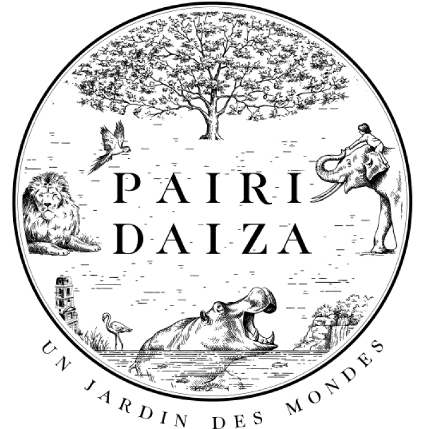

Presentation de l'entreprise:
L’entreprise que j’ai choisie est Pairi Daiza. Une success story belge qui a commencé sous le nom de Paradisio en 1994. En 2010, Paradisio devient Pairi Daiza pour que le nom colle mieux à la nouvelle philosophie du parc. Eric Domb, directeur du parc, voulait créer une dimension plus spirituelle en amenant de nouveaux animaux et en les alliant avec la richesse des civilisations humaines. Un petit morceau de chaque continent est représenté.
Aujourd’hui, Pairi Daiza c’est : un petit coin de paradis en Belgique, situé dans le domaine de Cambron à seulement 50min de Bruxelles. Il a été élu meilleur zoo d’Europe et accueille environ 2 millions de visiteurs par an (hors période covid). Il héberge 7 000 animaux du monde entier dans ces décors plus magnifiques les uns que les autres.
Au-delà, d’être un parc pour les visiteurs, c’est également un centre de recherches scientifiques pour la préservation des espèces menacées.
À mes yeux, cette entreprise est un synonyme de réussite. En 2015, elle a été élue entreprise de l’année. De plus, leur modèle en lui-même est une mission éthique. Au-delà, de l’aspect divertissement ils ont une réelle mission envers leurs animaux qui sont l’ADN du parc. J’ai voulu en découvrir plus sur leurs aspects RSE et voir ce qui se cache derrière la magie du parc.
Il est vrai que travailler dans un environnement pareil, ça fait rêver et si l’opportunité se présente pourquoi pas. J’ai toujours aimé les animaux et travailler d’une certaine manière pour eux serait vraiment plaisant. De plus, ils sont en plein renouveau avec leur nouvelle offre d’hôtellerie qui leur permet de toucher un tout nouveau segment.
Dimension RSE de l’entreprise:
Ils sont acteurs dans plusieurs programmes de conservation des espèces menacées. Ils prennent des initiatives comme la reproduction d’espèces menacées (panda, gorilles…), un centre de revalidation, des installations optimales pour héberger les animaux et une interactivité avec le public dans un esprit de développement durable.
Ils ont créé la fondation Pairi Daiza pour ouvrir le regard sur la biodiversité, créer un attachement à la nature et susciter un engagement durable pour sa conservation. Chaque année, ils versent plusieurs dons à différentes associations œuvrant pour la préservation des habitats naturels des animaux, pour la protection et la réinsertion d’espèces et pour la recherche scientifique qui œuvrent en ce sens. Leur nouvel investissement « la terre du froid » peut aussi servir à sensibiliser les visiteurs au réchauffement climatique.
En plus de se préoccuper des animaux, ils ont une réelle politique RSE. En 2015, Eric Domb a racheté toutes les actions qui n’étaient pas à lui avec son associé Mark Coucke afin qu’ils soient les uniques propriétaires du parc. Au même moment, ils ont fait sortir Pairi Daiza de la bourse. Leur but était de conserver le caractère 100% belge du parc et de lui donner un visage familial.
Le respect de l’environnement est au sein de chaque nouveau projet. Notamment par la construction de leur nouveau carport de leur parking. Ils ont pris la décision d’implanter 62 750 panneaux photovoltaïques qui subviendront aux besoins énergétiques du parc et plus encore. Le surplus d’énergie verte sera réinjectée sur le réseau public. Ils ont également équipé le parking de bornes de chargement de véhicules électriques.
Il ne faut néanmoins pas oublier que le parc est une immense entreprise qui se situe dans le fin fond du Hainaut. Les touristes doivent traverser quatre villages pour arriver là-bas. Hors un aspect RSE est également de diminuer son impact sur l’environnement environnant. Un projet de route alternative est en cours mais n’a pas encore été validé par la région wallonne.
Il y a également une rumeur un peu négative pour l’entreprise : Eric Domb serait proche de Philippe Vastapane un chasseur et entrepreneur de plusieurs fermes d’élevage et de chasse d’où proviendraient les rhinocéros du zoo. Cette rumeur a été démentie par Eric Domb.
Un des inconvénients d’un parc aussi grand est le nombre d’employés. Ici, ils emploient 100 personnes à l’année mais doivent engager environ 200 saisonniers. Ils ne sont pas très bien côtés sur le site Glassdoor où leur score est de 2,8/5 mais ils ont un score de 3,6 sur le site indeed. Les avis varient mais ce sont surtout les horaires et le salaire qui posent soucis pour les travailleurs. Le travail y est intense et les journées sont longues en pleine saison. Le bien-être des employés est un aspect RSE important. Il faudrait peu-être revoir ces journées et donner plus d’information sur le salaire en amont. La difficulté je pense réside dans le fait qu’ils n’ont pas que des employés en CDI mais aussi des intérims qui viennent d’agence ou des saisonniers.
Beaucoup disent également que le management des équipes n’est pas bon.
Ce n’est pas une petite entreprise. Il n’est donc pas possible d’inculquer une hiérarchie horizontale.
Recommandations:
La transparence sur leur aspect RSE n’y est pas du tout. Il n’est jamais fait mention de leurs actions alors qu’il y en a. Pour les animaux tout est expliqué mais ce qu’ils font au niveau du développement durable et du social n’est jamais expliqué. Il faudrait soit le mettre plus en avant soit le développer.
S’il existe dans le management des équipes, ils pourraient organiser des formations en ce sens afin que chaque manager soit mieux armé pour s’occuper de ses équipes.
De plus, ils vendent énormément de produits promotionnels dans tout le parc. Pourquoi ne pas vendre des objets plus éthiques comme des peluches faites en matériaux recyclés ou dans cet aspect-là.
Ils insistent sur le fait que leurs ours polaires sont aussi là pour sensibiliser les gens au réchauffement climatique. Ils pourraient créer un endroit dédié à cet objectif et parler du réel problème que cela crée.